Wasserfilter
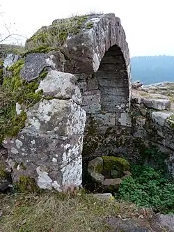
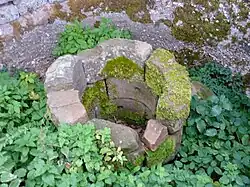
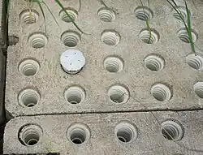
Ein Wasserfilter ist eine Vorrichtung zur Verbesserung der Wasserbeschaffenheit. Diese Verbesserung besteht im Allgemeinen darin, Partikel wie Trübstoffe bzw. Mikroorganismen oder unerwünschte im Wasser gelöste Substanzen zu entfernen oder ihre Konzentration zu senken.
Zu unterscheiden ist zwischen rein physikalischen, mechanisch mittels Sieben arbeitenden Filtern und solchen, die chemisch-physikalische Effekte zur Entfernung von gelösten Substanzen ausnutzen:
- Zur ersten Gruppe gehören z. B. Kies-, Stein-, Kunststoff-, Metall-, Sand- oder Polstofffilter usw. sowie die Ultra- bzw. Mikrofiltration. In diesen Systemen werden im Wesentlichen partikuläre Inhaltsstoffe abgetrennt, die für ein Passieren der Filterschüttung bzw. der Membrane zu groß sind (Siebeffekt).
- Im Wasser gelöste Stoffe werden hingegen im Falle von organischen Substanzen durch Adsorption bspw. an Aktivkohle aus dem Wasser entfernt oder aber, sofern es sich um Ionen handelt, durch Ionenaustausch an Ionenaustauschermaterialien sowie beispielsweise Calcium- oder Magnesium-Kationen.
Eine gewisse Sonderstellung nehmen die Diffusionsmembranen der Nanofiltration und Umkehrosmose ein: Mit diesen Membranen ist es möglich, sowohl einen Großteil der gelösten organischen Inhaltsstoffe als auch einen Großteil der gelösten Salze (Ionen) aus dem Wasser zu entfernen.
Trinkwasserfilter
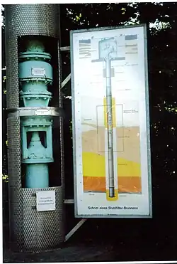
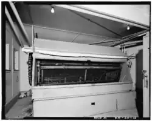
Das in Deutschland abgegebene Trinkwasser muss den Anforderungen der Trinkwasserverordnung (TrinkwV) entsprechen und wird regelmäßig nach deren Vorgaben untersucht. Dadurch ist eine relativ gute Wasserqualität flächendeckend gewährleistet. Von der Trinkwasserverordnung bisher nicht geregelte und daher auch nicht untersuchte Stoffe können vor allem in Oberflächenwasser, seltener auch im Grundwasser enthalten sein. Mit fortschreitender Analysentechnik und aufgrund diverser Screeninguntersuchungen werden solche Stoffe gelegentlich in Oberflächenwässern und manchmal auch im Trinkwasser gefunden. Ist dies der Fall, erfolgt stets eine Bewertung dieser Stoffe durch das Umweltbundesamt bzw. die Trinkwasserkommission, mit entsprechenden Empfehlungen für die Wasserversorger. Dennoch sind, nicht zuletzt aufgrund des sogenannten analytischen Fensters, Restrisiken nicht mit Sicherheit auszuschließen, da es nicht möglich ist, ein Wasser auf wirklich „alle“ Substanzen zu untersuchen. Solche Restrisiken sind, zumindest in Deutschland, als sehr gering einzustufen. Trotzdem besteht bei manchen Menschen das Bedürfnis, durch zusätzliche Filtereinrichtungen das Wasser zusätzlich zu behandeln und somit bspw. gelöste organische Substanzen weitergehend aus dem Wasser zu entfernen.
Ferner wird in einem Teil der Trinkwasserversorgungsgebiete vergleichsweise hartes Wasser mit einer Trinkwasserhärte von über 12 °dH bzw. 21 °fH eingespeist. Diese Wasserhärte wird von einem Teil der Bevölkerung als nachteilig empfunden, da die Härte zum einen zu einem erhöhten Aufwand bei der Wartung von Warmwassergeräten und zum anderen zu einem Mehrverbrauch bei Wasch- und Reinigungsmitteln führt. Nicht zuletzt kann eine hohe Wasserhärte den Geschmack von Getränken, wie Tee oder Kaffee, beeinträchtigen.
Ort der Wasserbehandlung
Wasserwerk
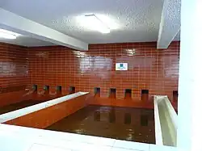
Grobfilter in der häuslichen Installation
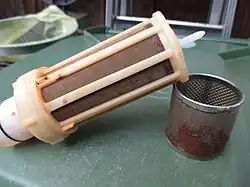
Zum Schutz vor dem Eintrag etwaiger aus dem lokalen Versorgungsnetz gelöster Teile und Substanzen (z. B. Rostpartikel aus älteren Gusseisenrohren) können Grobfilter z. B. vor der Wasseruhr an der Hauptabnahmestelle installiert werden.
Wasserbehandlung im Haushalt
Um sich vor möglicherweise im Trinkwasser vorkommenden Substanzen zu schützen, ist es ausreichend, nur das Wasser zu behandeln, das tatsächlich getrunken wird, d. h. direkt an der Entnahmestelle. Zum Einsatz kommen fest installierte Anlagen oder „Kannensysteme“, bei denen das Trinkwasser zunächst gezapft und dann „portionsweise“ aufbereitet wird. Es werden vorwiegend Systeme verwendet, die gelöste organische Substanzen aus dem Wasser entfernen wie Aktivkohlefilter, Umkehrosmosemembranen oder eine Kombination aus beiden Verfahren. Zum Teil werden Ionenaustauscher eingesetzt.
Offene Systeme
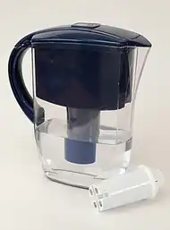
Länger bekannt sind bereits auf Ionentauschern basierende, sog. offene Filtersysteme, die ähnlich einem Getränkekrug mit Leitungswasser gefüllt werden und gefiltertes Wasser beim Ausgießen abgeben (Kannenfilter). Die Filterleistung der Kannenfilter ist aufgrund ihres Aufbaus allerdings sehr eingeschränkt – so veröffentlichen die großen Hersteller auch keine genauen Zahlen zur Reduzierung einzelner Schadstoffe aus dem Trinkwasser. Kannenfiltersysteme bergen zudem die Gefahr der Verkeimung in nicht rechtzeitig gewechselten Filterkartuschen oder unsauberen Kannen.[1] Auch zum Produzieren größerer Mengen sind sie wenig geeignet, ihre Stärke liegt in der Herstellung von Kaffee- oder Teewasser. In Gebieten mit hoher Wasserhärte sind bei der Benutzung von Kannenfiltern deutlich weniger Kalkablagerungen in Geräten zur Heißwasserbereitung und anderen Gefäßen zu beobachten. Für Wasser, das in Behältnisse abgefüllt wird, müssen die Grenzwerte am Punkt der Abfüllung eingehalten werden, d. h. am Zapfhahn (§ 10 der Trinkwasserverordnung). Damit gelten die strengen mikrobiologischen Parameter der Trinkwasserverordnung nicht für Wasser aus Wasserfiltern im Privat-Haushalt.
Untertisch-Filter
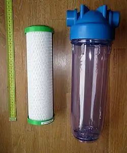
Für die Filterung von Trinkwasser können auch fest „untertisch“ installierte Filter verwendet werden, so dass über einen gesonderten Wasserhahn oder einen speziellen Wasserhahn mit einem extra-Auslauf gefiltertes Wasser bezogen werden kann. Die Durchflussmenge dieser entnahmestellenbezogenen Filter ist für das Zapfen einzelner Portionen ausreichend, für die Haushaltsversorgung mit 2 bis 3 l/min jedoch zu gering. Auch bei diesen Filtern ist der regelmäßige mindestens halbjährliche Filtertausch obligatorisch.
Hauswasseranlagen
Eine andere Möglichkeit besteht in der Behandlung des gesamten in einem Haushalt verwendeten Wassers. Hier wird eine Aufbereitungsanlage direkt hinter dem Hausanschluss bzw. der Wasseruhr installiert. Im Vordergrund steht bei diesen Anlagen häufig die Enthärtung, so dass hier hauptsächlich Ionenaustauscheranlagen zur Anwendung kommen. Seltener werden hier Systeme eingesetzt, die auch gelöste organische Substanzen entfernen.
Aufbereitungsverfahren
Aktivkohle
Aktivkohle ist in der Lage, gelöste organische Spurenstoffe, wie z. B. Pestizidwirkstoffe und deren Metabolite oder Medikamentenrückstände durch Adsorption dieser Stoffe aus dem Wasser zu entfernen. Je unpolarer die Stoffe sind, desto besser werden sie an Aktivkohle adsorbiert. Ionische Substanzen, wie Mineralien, Salze und Kalk, verbleiben dagegen im Wasser.
Ionenaustauscher
Wie der Name sagt, sind Ionenaustauscher in der Lage, bestimmte Anionen bzw. Kationen im Wasser durch andere Ionen zu ersetzen. Je nach Ionenaustauschertyp können bspw. die Härtebildner Calcium- und/oder Magnesium-Ionen gegen andere Kationen ausgetauscht werden. In Geschirrspülmaschinen sind bspw. Ionenaustauscher integriert, die die Härtebildner durch Natriumionen ersetzen, um unerwünschte Kalkablagerungen zu verhindern. Ungeladene organische und anorganische Substanzen passieren den Ionenaustauscher ungehindert. Die Rückhaltung suspendierter Partikel ist ein eher unerwünschter Nebeneffekt, der das Ionenaustauscherharz verunreinigt. Ionenaustauscher werden in der Regel mit Natronlauge bzw. Salzsäure oder „Salzlaugen“ (im Geschirrspüler ist dies Natriumchlorid) regeneriert, d. h. die aufgenommenen Ionen aus dem Wasser werden wieder durch Hydroxid- bzw. Hydroniumionen bzw. Natrium-Ionen ersetzt.
Elektroentionisierung (EDI)
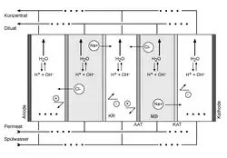
Die Elektroentionisierung oder kontinuierliche Elektroentionisierung (CEDI) ist eine Kombination aus Ionentauscher und Dialysegerät. Aus dem Wasser entfernt werden CO2, Ionen, Silikate und Borate. Während des Prozesses entsteht eine konzentrierte (Konzentrationskanal) und eine gereinigte (Produktwasserkanal) Lösung.
Aufbau und Funktion: Mehrere wasserdurchströmte, sich zwischen einem elektrischen Feld befindliche Ionentauscherschichten sind durch ionenselektive Membranen von den benachbarten Konzentratkanälen getrennt. Auf einer Seite der Ionentauscherharzschicht befinden sich jeweils anionenselektive auf der anderen kationenselektive Membranen.
Nun wird eine Spannung angelegt. Positiv geladene Kationen bewegen sich zur negativ geladenen Kathode und Anionen zur Anode. Allerdings kommen sie nicht weit: Den Produktwasserkanal können sie verlassen und in den Konzentrationskanal eindringen, aber dann wird diesen der Weg durch eine für sie nicht permeable Membran versperrt und sie werden im Konzentratwasser weggespült. Die Ionenaustauscherharze sind notwendig, da das Wasser mit zunehmender Reinheit auch seine Leitfähigkeit verliert. So bildet das Harz eine Leitungsbrücke.[2]
Die Regeneration des Ionentauschers erfolgt kontinuierlich durch Dissoziation des Wassers im elektrischen Feld. Bei diesem Verfahren werden weder chemische Regenerationsmittel benötigt, noch giftige Abfälle oder pH-Sprünge im Produktwasser produziert.
Umkehrosmose
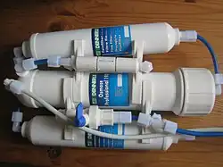
Das bei der Umkehrosmose gewonnene Wasser entspricht dem umgangssprachlichen „Osmosewasser“. Bei diesem Prozess wird das zu reinigende Wasser unter Druck durch eine semipermeable Membran getrieben und hinterlässt dabei neben allen suspendierten Partikeln einen Großteil aller ionisierten oder hinreichend großmolekularen Stoffe, inklusive der Mineralien und Spurenelemente.[3] Gängige Systeme zur Wasseraufbereitung mittels Umkehrosmose weisen meist einen großen Anteil ungenutzten Abwassers auf. Der pH-Wert wird durch den Basenentzug in der Regel auf 6 bis 6,5 abgesenkt, denn das gelöste Kohlendioxid verbleibt im Filtrat und wirkt einseitig als Säure. Außerdem wird ein minimaler Wasserdruck von 3,5 bar für den pumpenlosen passiven Betrieb vorausgesetzt. Durch Sidestream-Filtration kann das Wasser-Abwasser-Verhältnis deutlich verbessert werden.[4] Zum Entsalzen von Meerwasser ist die Umkehrosmose kostengünstiger als die aufwändigere energieintensivere Destillation. Hierbei kommen Membranen aus Polyamiden und Polysulfonen zum Einsatz, die in Form von Hohlfasern eine hohe Drucktoleranz bei gleichzeitiger großer spezifischer Oberfläche aufweisen. Das so aufbereitete Meerwasser hat allerdings einen so niedrigen Salzgehalt, dass es insbesondere als Trinkwasser ungeeignet ist.[5] In der Industrie wird Umkehrosmose eingesetzt, um z. B. chemisch (fast) reines H2O, Saftkonzentrate oder alkoholfreies Bier herzustellen oder auch Tafelwasser vorzubehandeln.
Kombinierte Systeme
Häufig verwendet werden auch Filtersysteme, die Aktivkohle in getrennten Patronen mit Ionenaustauschern oder speziellen Kalk-Katalysatoren zur Entfernung von Kalk oder Nitrat kombinieren. Andere Systeme kombinieren Aktivkohlefilter mit einer Bestrahlung mit ultraviolettem Licht oder werden als mehrstufige Umkehrosmose-Anlagen eingerichtet.
Mobile Systeme bzw. Reisefilter
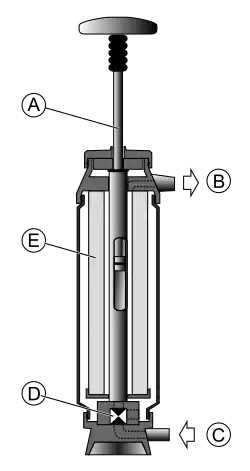
Legende:
(A) Pumpstößel
(B) Wasserauslass
(C) Wasseransaugstutzen
(D) Rückschlagventil
(E) keramische Filterkerze
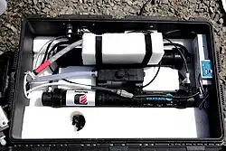
Bei Reisen in Gebiete, in denen nur keimbelastetes und/oder stark chloriertes Leitungswasser zur Verfügung steht, können mobile Wasserfilter, sog. Reisefilter, als Alternative zum Abkochen des Wassers eine sinnvolle oder sogar notwendige Gesundheitsvorsorge sein. Hierfür bieten sich kleinere und leichtere Geräte mit Adaptern an, die an fast alle Wasserhähne angeschlossen werden können. Es sind darüber hinaus tragbare Geräte erhältlich, die mittels Pumpmechanismen hohe Durchflussraten und gute Filtrationsergebnisse erzielen. Bei einigen Geräten lässt sich die Kartusche abkochen und manche Geräte filtern sowohl mit einem langlebigen Keramikfilter als auch mit Aktivkohlefilter. Viele Reisefilter können auch zur Filterung von chemisch/biologisch verunreinigten Rohwasser (Grund- oder Oberflächenwasser) z. B. in Regionen mit illegalem Bergbau genutzt werden.
Die ersten Reisefilter – tragbare Pumpen, die Wasser mittels eines Keramikfilters reinigen – kamen in den frühen 1950er-Jahren auf den Markt. Bis heute hat sich der grundlegende Aufbau und das Funktionsprinzip solcher Filter nicht wesentlich geändert: Mit einer Handpumpe wird Wasser angesaugt, durch einen Keramikfilter gepresst und dann filtriert ausgestoßen. Krankheitserreger wie Protozoen und Bakterien bleiben dabei an der Oberfläche des Filters, da sie größer als die Filterporen sind. Viren sind nominell jedoch kleiner als die Poren und können hindurchschlüpfen. Da diese sich aber gerne an andere Schwebstoffe anheften, die größer als sie selbst sind, wird ihr Anteil zumindest reduziert.
Eine Weiterbehandlung mit UV-Licht, Chlor oder thermischer Desinfektion (Abkochen über eine bestimmte Dauer) ist aufgrund der Viren anzuraten.
Aquariumfilter
Im Bereich der Aquaristik kommen unterschiedliche Bauformen zum Einsatz: Neben Granulatfiltern und Umkehrosmosefiltern kommen hierbei unter anderem Aktivkohlefilter und Ionenaustauscherfilter zum Einsatz.
Generell kann zwischen der mechanischen, physikalisch-chemischen und biologischen Reinigung des Aquariumswassers unterschieden werden.
Biologische Reinigung
Als Filtermaterialien in Wasserfiltern zur biologischen Reinigung werden häufig Keramikkügelchen oder -röhrchen verwendet. Die neueren Filtermedien bestehen häufig aus Kunststoff. Sie wirken auch als mechanische Grobfilterung. Da diese Materialarten häufig eine poröse Oberfläche aufweisen, können sich hier riesige Populationen von nützlichen Mikroorganismen ansammeln, welche für den Stickstoffabbau verantwortlich sind. Was oft unterschätzt wird, ist die riesige Oberfläche, welche ein Lavakiesboden aufweist. Jeder Bodengrund bietet Bakterien eine Kulturfläche, wenn genügend Frischwasser zugeführt wird. Dies wird normalerweise durch eine Bodenheizung oder im Meerwasseraquarium durch Lebendgestein erreicht. Auch Algenwachstum im Süßwasseraquarium kann man mit einer intakten biologischen Filterung fast gänzlich vorbeugen.
Eine neuere Filterungstechnik stellt eine Kombination aus Aktivkohle und Effektiven Mikroorganismen (EM-Keramik-Filter) dar. Diese ist zur Herstellung von gesäubertem und biologisch belebtem Trinkwasser ebenso geeignet wie für aquaristische Zwecke.
Physikalisch-chemische Reinigung
Eine physikalische Wasserreinigung wird durch Aktivfilterkohle realisiert. Die Aktivkohle hat durch ihre große innere Oberfläche eine gute Adsorptions-Fähigkeit auch für schädliche Substanzen. Es werden bevorzugt hochmolekulare Stoffe gespeichert, z. B. Farbstoffe, Proteine usw. Nach einer gewissen Zeit erreicht der Aktivkohlefilter eine Sättigung und es können keine weiteren Stoffe mehr adsorbiert werden. Das Wasser fließt dann unverändert durch den Aktivkohlefilter hindurch.
Mittels eines Ionenaustauschers können selektiv Ionen von Schwermetallen entfernt und – in Grenzen – das Wasser enthärtet werden.
Diese beiden Reinigungseinheiten sind meist so ausgelegt, dass sie nach ca. 3–4 Wochen ersetzt oder regeneriert werden müssen.
Mechanische Reinigung
Für eine mechanische (auch physikalische) Reinigung von verschmutztem Wasser sind Einrichtungen wie Fällungskammer, Keramikröhrchen und Perlonwatte nützlich. Sie wirken wie Siebe und werden auch nach Lochgröße der Reihe nach in den Wasserstrom gehängt. So werden die meisten Schwebeteilchen, welche eine optische Verunreinigung darstellen, entfernt. Diese Filterungsart dient weniger dem Wohlbefinden der Wassertiere, als vielmehr der Attraktivität des Aquariums.
Ein weiterer Filterzusatz, der oft Verwendung findet, ist Torf. Er dient aber nicht dazu, das Wasser zu filtern, sondern säuert das Wasser mit Huminsäuren an und enthärtet.
Bei einem Innenfilter werden als Filtermaterialien verschiedenporige Schwämme eingesetzt. Dementsprechend ist die Wirkung mechanisch. Die Oberfläche wird mit der Zeit besiedelt, sodass sich Biofilme ausbilden und zusätzlich eine biologische Filterung erfolgt.
Geschichte der Wasserfilter
Schon vor über 2.000 Jahren verwendeten die Maya in ihren Trinkwasserfiltersystemen kristallinen Quarz und Zeolith. Beide Mineralien werden auch heute in der modernen Wasserfiltration verwendet. Die Maya-Filter hätten schädliche Mikroben, stickstoffhaltige Verbindungen, Schwermetalle wie Quecksilber und andere Giftstoffe aus dem Wasser entfernt.
Der persische Ingenieur Al-Karaji (ca. 953–1029) schrieb ein Buch mit dem Titel The Extraction of Hidden Waters (Die Gewinnung verborgener Wasser), in dem er ein frühes Verfahren zur Wasserfilterung beschrieb.
Im 19. und 20. Jahrhundert wurden Wasserfilter für die Haushaltswasserproduktion im Allgemeinen in langsame Sandfilter und schnelle Sandfilter (auch mechanische Filter und amerikanische Filter genannt) unterteilt. Zwar gab es bereits vor 1800 viele kleine Wasserfiltersysteme, doch gilt Paisley in Schottland als die erste Stadt, die gefiltertes Wasser für eine ganze Stadt bereitstellte. Der Paisley-Filter wurde 1804 in Betrieb genommen und war ein früher Typ von Langsamsandfilter. In den 1800er Jahren wurden im Vereinigten Königreich und auf dem europäischen Festland Hunderte von Langsamsandfiltern gebaut.
1891 wurde in Deutschland der Berkefeld Wasserfilter erfunden und 1922 im Vereinigten Königreich von der Berkefeld Filter Co. vermarktet. Berkefeld war der Name des Besitzers des Bergwerks in Hannover, in dem das Filter-Material gewonnen wurde.
In Lawrence, Massachusetts, wurde 1893 aufgrund anhaltender Typhusepidemien, die durch die Verunreinigung der Wasserversorgung durch Abwässer verursacht wurden, ein intermittierender Langsamsandfilter gebaut und betrieben. Der erste kontinuierlich arbeitende Langsamsandfilter wurde 1897 von Allen Hazen für die Stadt Albany, New York, entworfen. Die umfassendste Geschichte der Wasserfiltration wurde 1948 von Moses N. Baker veröffentlicht und 1981 neu aufgelegt.[6]
In den 1800er Jahren war die mechanische Filtration ein industrielles Verfahren, das auf der Zugabe von Aluminiumsulfat vor dem Filtrationsprozess beruhte. Die Filtrationsgeschwindigkeit bei der mechanischen Filtration war in der Regel mehr als 60-mal schneller als bei langsamen Sandfiltern, so dass deutlich weniger Landfläche benötigt wurde. Die erste moderne mechanische Filtrationsanlage in den USA wurde in Little Falls, New Jersey, für die East Jersey Water Company gebaut. George W. Fuller entwarf und beaufsichtigte den Bau der Anlage, die 1902 in Betrieb genommen wurde. 1924 entwickelte John R. Baylis ein Rückspülsystem mit festem Gitter, das aus Rohren mit Düsen bestand, die während der Expansion Wasserstrahlen in das Filtermaterial spritzten.
Mikroplastikfilter
Das Fraunhofer-Institut für Lasertechnik arbeitet derzeit an einem Filter für Mikroplastik, welcher dereinst Partikel von bis zu 10 µm aus dem Abwasser herausfiltern können soll.[7]
Siehe auch
Weblinks
- Stellungnahme der Trinkwasserkommission des Bundesministeriums für Gesundheit: Bewertung von Perfluorierten Tensiden (PFT). (PDF, 187 kB) Umweltbundesamt, 3. August 2007, abgerufen am 8. Juni 2010 (Vorläufige Bewertung von Perfluorierten Tensiden (PFT) am Beispiel ihrer Leitsubstanzen PFOA und PFOS im Trinkwasser des Hochsauerlandkreises).
- Uhlenberg, Eckhard: PFT-Sanierungs- und Maßnahmenprogramm des Landes NRW. MUNLV NRW, 11. Dezember 2007, abgerufen am 8. Juni 2010 (Minister-Rede auf der DWA-Fachtagung „PFT in Abwasser- und Abfällen“).
- Arbeitskreis Wasser, Grommelt, Hans-Joachim, Schönnauer, Sebastian, unter Mitarbeit: Arbeitskreis Gesundheit: Hormonaktive Substanzen im Wasser. (PDF, 84 kB) Bund Umwelt und Naturschutz Deutschland (BUND), 12. September 2002, abgerufen am 8. Juni 2010 (2 Seiten Literaturverzeichnis).
- Röhr, Christian, Holzapfel, Wolfram: Der Einsatz von Aktivkohle bei der Sanierung von Grundwasser und Bodenluft. GUT Gesellschaft für Umwelttechnologie mbH, 1999, abgerufen am 8. Juni 2010 (zahlreiche z. T. mehrfarbige Abb., Diagramme, Literaturverzeichnis).
- Schönauer, Sebastian, Sprecher des Arbeitskreises Wasser, Grommelt, Hans Joachim, stellv. Sprecher BAK Wasser: Hormonaktive Substanzen und Arzneimittel. (PDF, 186 kB) Bund Umwelt und Naturschutz Deutschland (BUND), 8. Januar 2008, abgerufen am 8. Juni 2010 (BUND-Beitrag zur 7. Umweltmedizinischen Tagung, Berlin, 5.–6. Oktober 2007).
- Text der Trinkwasserverordnung
Journalistische Beiträge:
- Ralph Ahrens: Pestizide im Trinkwasser Deutschlandradio vom 22. Oktober 2007, abgerufen am 8. Juni 2010
- Chris Löwer: Medikamenten-Cocktail im Trinkwasser Spiegel Online, 26. August 2004, abgerufen am 8. Juni 2010
- Manfred Stein: Resistente Keime und Rückstände im Wasser Animal Health Online, 2000, abgerufen am 8. Juni 2010
- Irene Meichsner: 1. Teil: Die Grundwasser-Zeitbombe aus dem Arzneischrank Spiegel Online, 11. Februar 2007, abgerufen am 8. Juni 2010
Einzelnachweise
- ↑ Wasserfilter und -enthärter im Haushalt: Meist überflüssige Investition. Verbraucherzentrale Nordrhein-Westfalen, 22. März 2017, abgerufen am 9. Januar 2018 (Übersichtsartikel über Aktivkohlefilter, Ionenaustausch, Membran-/Umkehrosmose-Verfahren, Destilliergeräte, Mikrofilter, Dosieranlagen, Kalkschutzgeräte, "Esoterische" Wasseraufbereitung).
- ↑ Rudolf Voigt, Alfred Fahr: Pharmazeutische Technologie. 11. Auflage. S. 140, Deutscher Apotheker Verlag, Stuttgart 1010, ISBN 978-3-7692-5003-9.
- ↑ Peter Janz: Der PJ Ratgeber Umkehrosmose: Funktionen, Vorteile, Kritik, Modelle - Alles, was sie über die Trinkwasser-Aufbereitung im Haushalt wissen müssen. Verlag Wasserwissenswert (2014)
- ↑ FL Evans: Sidestreams in Wastewater Treatment Plants. (1987) In: Journal of the Water Pollution Control Federation 59(1)
- ↑ Meerwasser In: Springer Umweltlexikon, S. 747, ISBN 978-3-642-56998-2
- ↑ Moses Nelson Baker: The Quest For Pure Water: The History Of Water Purification From The Earliest Records To The Twentieth Century. 2. Auflage. American Water Works Association, Denver 1981, ISBN 978-0-89867-247-3 (englisch).
- ↑ Neuer Wasserfilter entfernt Mikroplastik mit lasergebohrten Kleinstlöchern In: fona.de, 30. Januar 2019, abgerufen am 31. Januar 2019.
- Fluidelement
- Filter (Fluidtechnik)
- Wasseraufbereitung
- Membrantechnik